Isti ljudi. Više isporuke. Manje tebe u svakoj odluci.
Brojke ovde su onakve kakve su klijenti izmerili. Gde brojke nema, pišem šta se promenilo, bez ulepšavanja.
Pusti ih da ti kažu sami
Agencija u SAD sa više od 20 klijenata
Imali su procedure, ali ne sistem. Svaki novi klijent je uvođen malo drugačije, i tu je zapinjalo. Postavili smo put klijenta, standarde završenosti, uloge i automatizacije. Sa istim timom su primili više klijenata i otvorili vrata ugovorima sa velikim firmama.
Šta je bilo pre, šta smo uradili, šta je posle
Pet ljudi je nosilo ceo sistem, a vlasnik je bio u svakoj odluci. Mapirali smo tok, skratili čekanje i postavili pravila isporuke pre automatizacije.
Novi čovek bi koštao 1.500 € mesečno, 6.000 € za četiri meseca. Posle radionice je Dušan sam mapirao proces isporuke i softver koji koriste i zaključio da mu zapošljavanje ne treba.
Agencija koja tech firmama zakazuje kvalifikovane prodajne sastanke. Postavili smo put klijenta, standarde završenosti, uloge i automatizacije.

Firma koja otvara i vodi američke firme za preduzetnike sa Balkana. Mapa je pokazala gde tim radi isti posao dvaput i koji koraci mogu da idu sami.

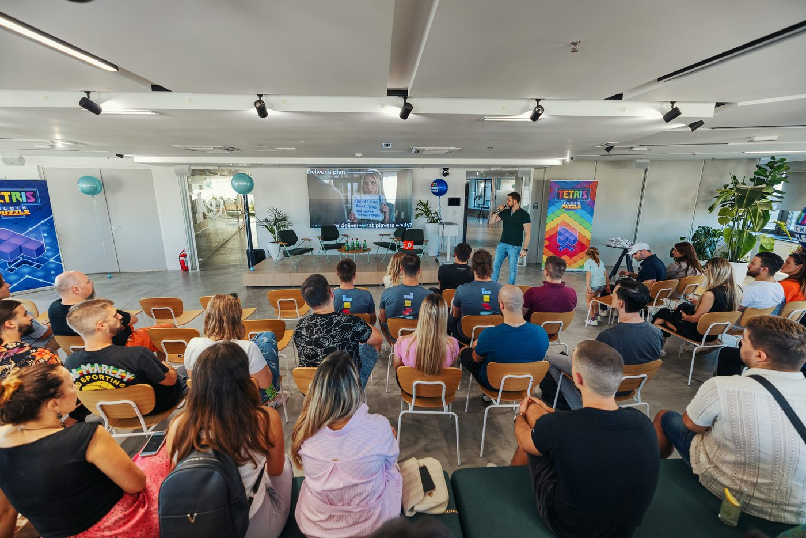
Rad sa liderima domena (platforma, alati, proizvod) na zajedničkoj viziji. Domen je preuređen u tri samostalna toka sa jasnim vlasništvom.

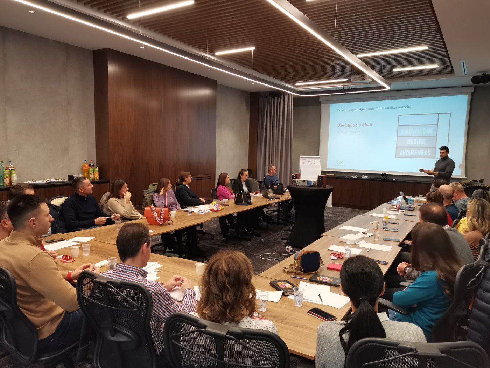
Trogodišnji program „Bolji biznis”: radionice o tome kako lideri donose odluke, sprovode ih i uče iz njih.
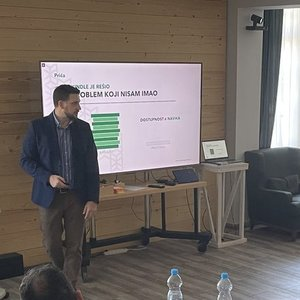
Ono što stigne posle saradnje
Imena i brojevi su zamagljeni, poruke su originalne.
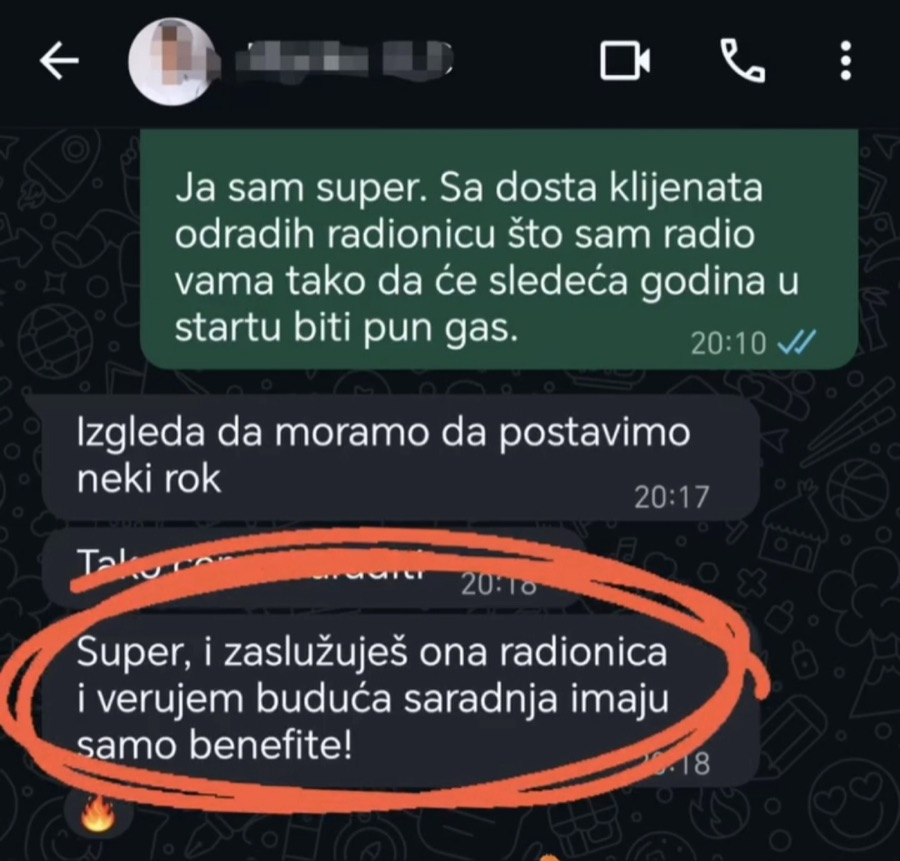
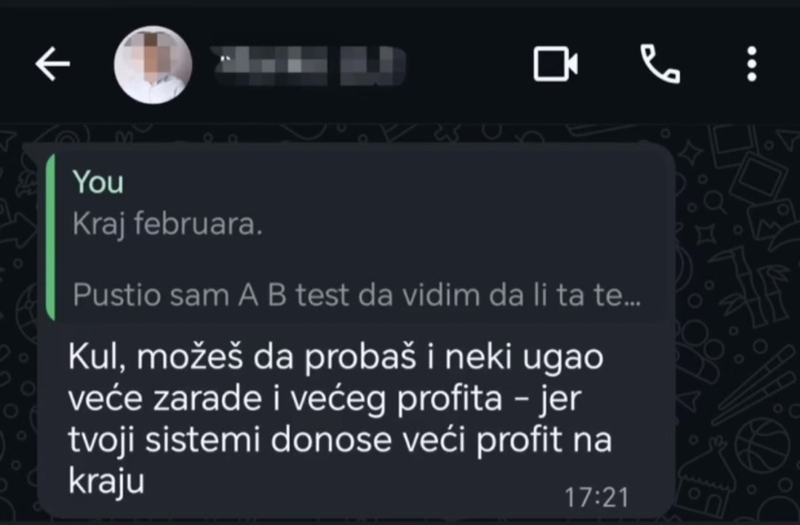
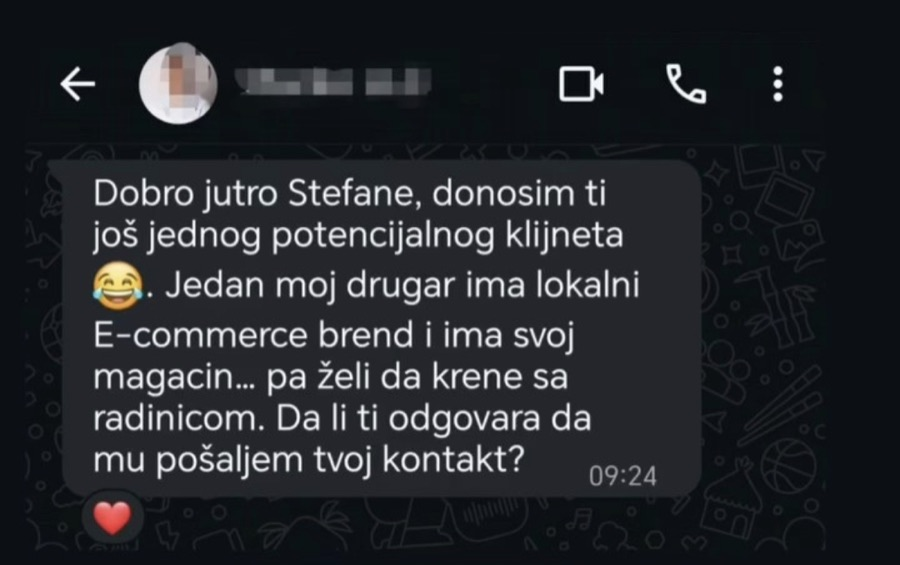
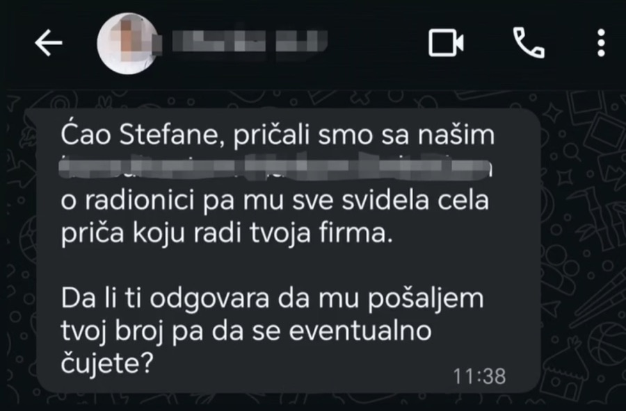
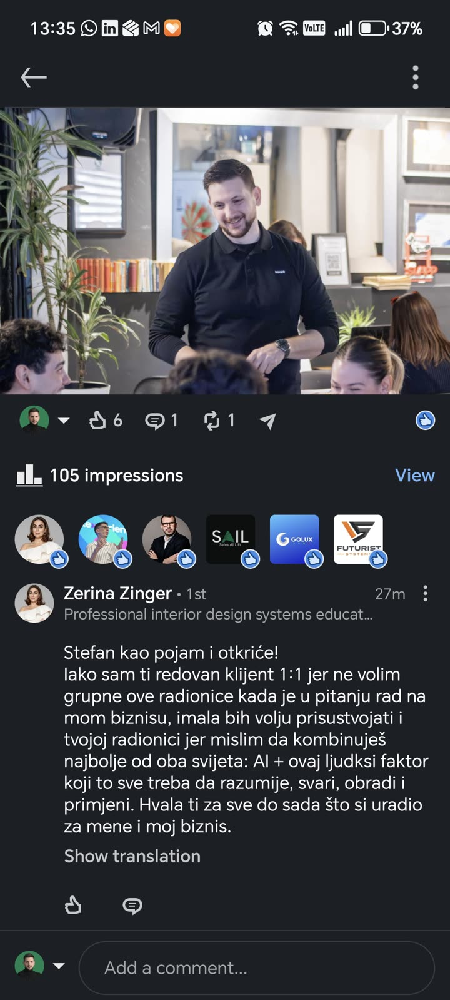
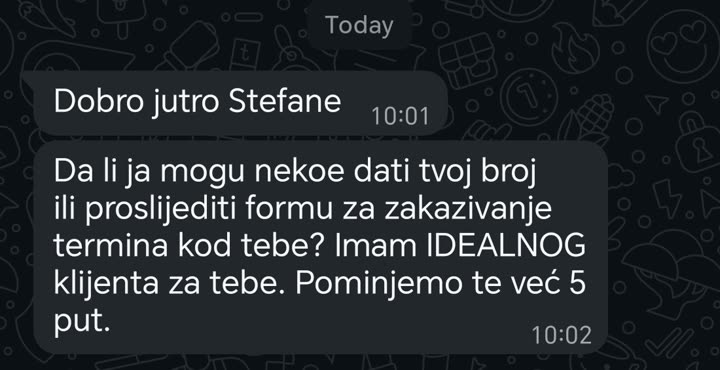
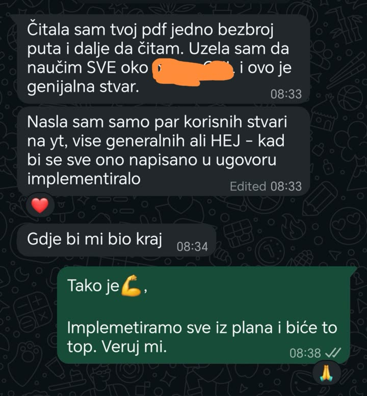
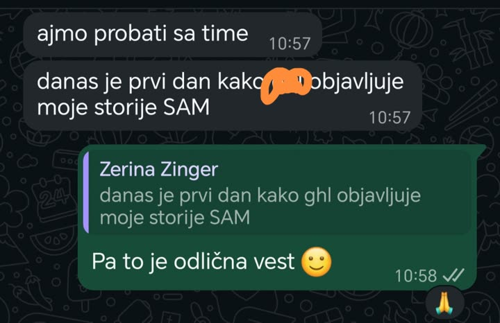
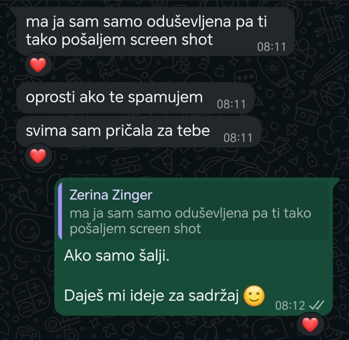
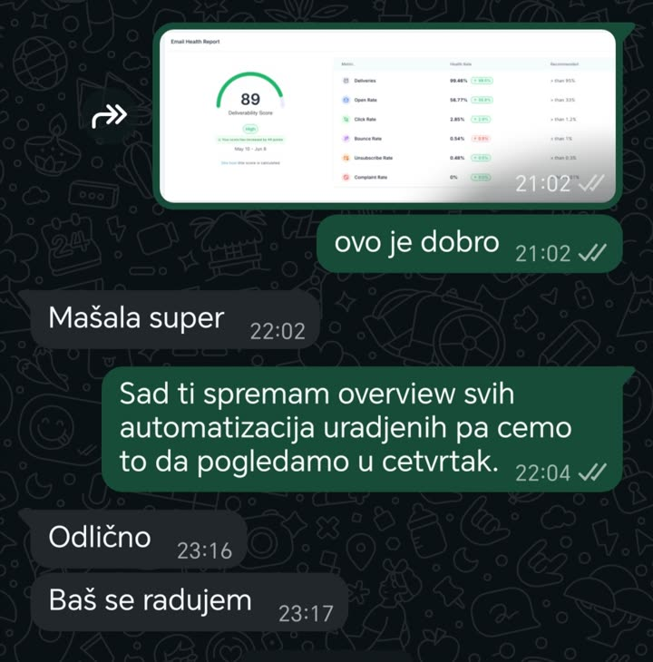
Šta kažu ljudi koji su bili na radionicama
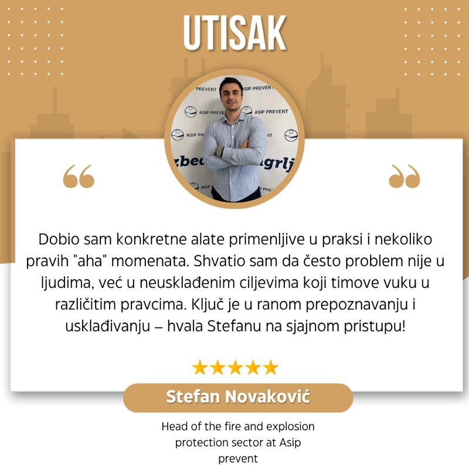
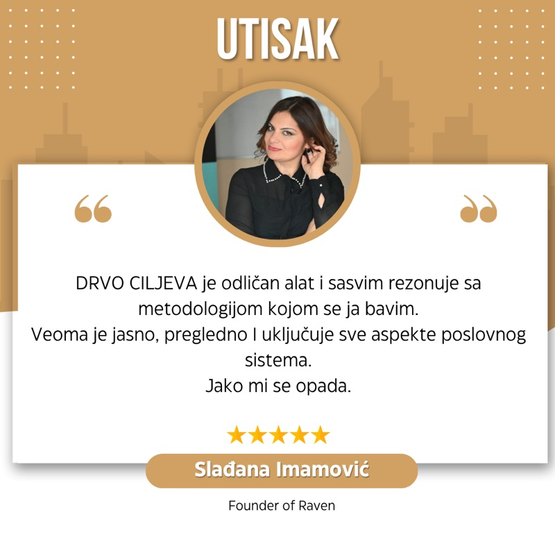
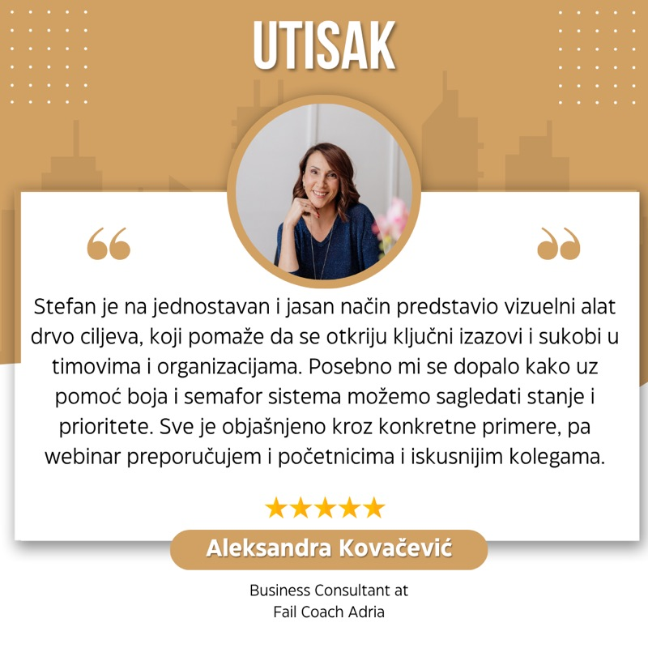
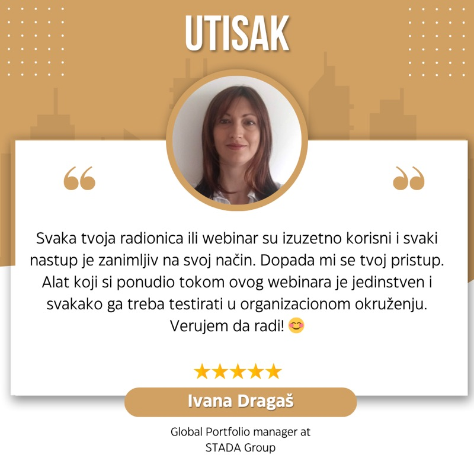